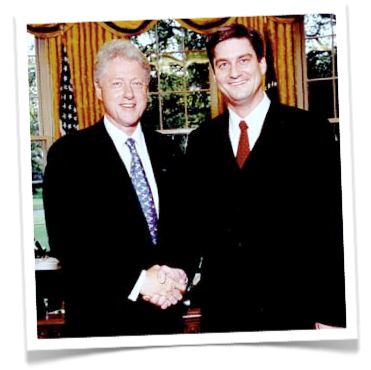

I've included some brief biographical information below, but please know this site isn't (just) an exercise in vanity; I maintain it mostly to keep ahead of sites like Namyz, Spoke, etc., who are claiming identities (including mine) to support failed business models.
My current project is Votizen, a social
lobbying platform for registered voters. Votizen helps citizens
accomplish their civic duty in a social way — backed by the real-world power of
their voting record. I am a
near-religious adherent to
the lean startup philosophy, and am honored to have investors that include Steve Blank, Dave McClure, and Eric Ries guiding me along the way.
Before that I founded Capitolix, which was an ASP for political campaigns. It was a spectacular failure as a financial investment but gosh did I learn. I paid for those lessons with three years of my life, countless nights at the office and an ulcer. But I am so much stronger for it, as Capitolix prompted my conversion to the lean approach.

That was preceded by USA.gov, which I co-founded with Eric
Brewer and a great team at the GSA.
USA.gov is the official US Goverment portal and remains one of the most useful sites on the Net. Here's a picture with President Clinton in the Oval Office
following the launch.
I was incredibly honored to be invited to the White House at all, let alone to meet the President in the Oval Office. That said, everyone should know that I am registered as "Decline to State" because I no longer believe the partisan system is in the best interest of our nation.
I started my career at Intuit where I absorbed the basics on Product Marketing. It was great because I learned about traditional product marketing from one of the best, but I also learned about marketing for startups as part of the 7-person team that created Quicken.com. I still remember trying to explain to a GM how someday everyone would manage their personal finance in Internet-based applications and not on desktop software. Almost fifteen years later and they finally get it!
The rest is pretty boring, but essentially I worked for a bunch of startups as an independent consultant before (and during) business school at UCLA. And speaking of school, I can't neglect to mention the finest learning institution in the history of the world, the University of California at Berkeley (Go Bears!) where I went to undergrad. I don't get back to Memorial Stadium for football games as often as I'd like, but when I'm there you'll find me in Section QQ, leading cheers.
Last on the list, but first in my life, is my wonderful family. I have a gorgeous and talented wife, an amazing daughter, incredibly supportive and loving parents, a brother and sister who are equally incredible, and in-laws that I adore. I couldn't possibly be more more blessed.
Sorry to bore you to death; hopefully that's enough to keep the 'extortionists-masquerading-as-networking-sites' at bay....